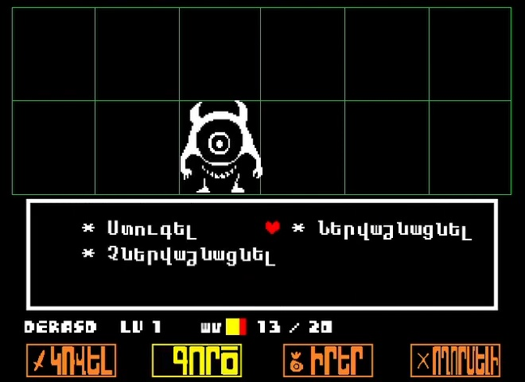
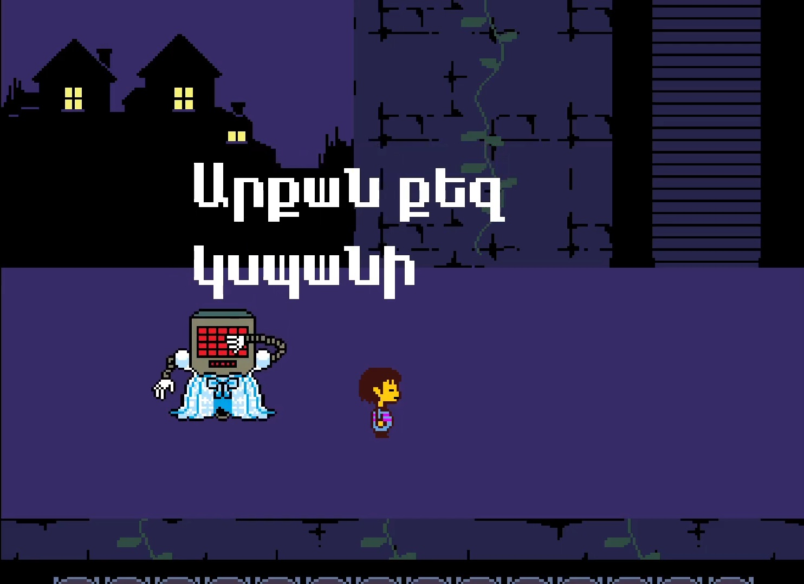
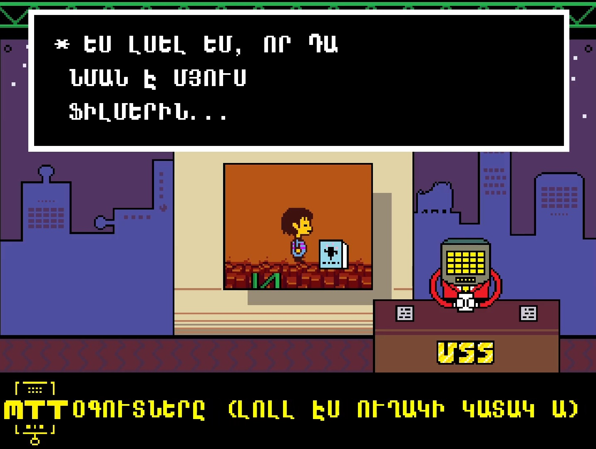

Underlate. Հայերեն
Սքրինշոթներ



×

Տեղեկություն
«Undertale» խաղի հայաֆիկատոր, որը իր մեջ ներառում է՝
- Լրիվ ավելացված հայերեն այբուբեն
- Տեքստերի թարգմանություն
- Տեքստուրների թարգմանություն
Ինչպե՞ս Տեղարդրել
Ներբեռնված արխիվի մեջի data.win ֆայլը՝ փոխարինեք ձեր օրիգինալ խաղի պանակի մեջի նույնանուն ֆայլի հետ